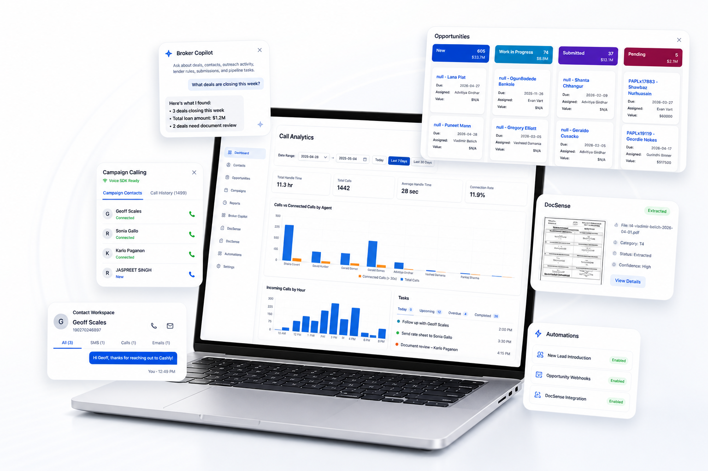
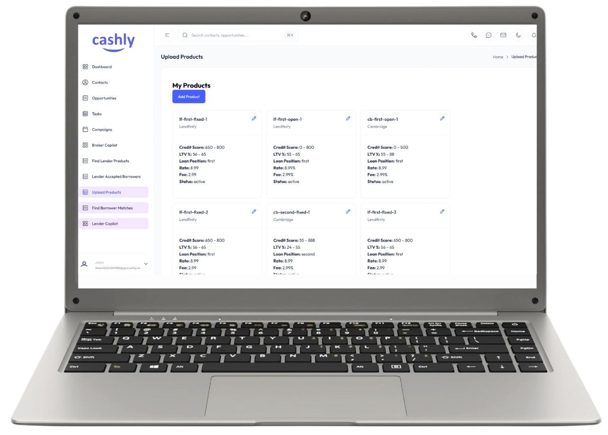
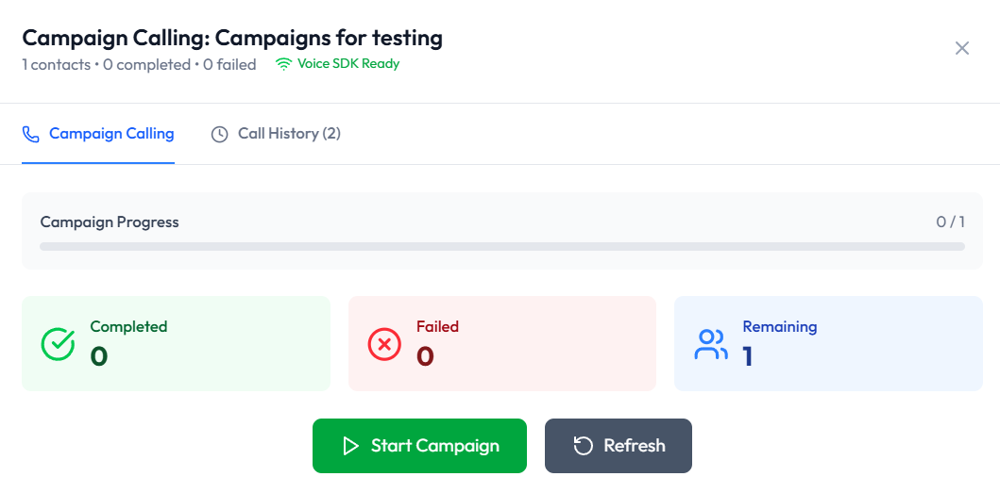
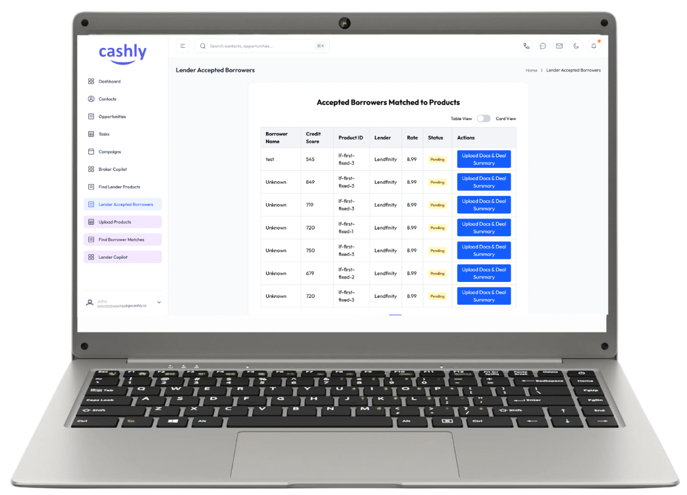

Calls per day can be routed, tracked, and coordinated inside one operating workflow.
Cashly Platform
Smart CRM for Smart Brokers.
CashlyCRM is the complete mortgage brokerage platform for teams moving from leads to closed deals in one system.

Proof Points
Software for brokerages that need measurable execution.
CashlyCRM eliminates lead leakage, speeds up lender matching, and gives teams the visibility they need to perform every day.
Missed leads is the target when follow-up ownership, notes, and tasks live in one place.
Lender matching happens with borrower context, file details, and strategy attached.
Call Analytics Highlights
See what brokers can understand at a glance inside Cashly.
Actionable Insights
Track key metrics like handle time, total calls, and connection rate in real time.
Agent Performance
See how your team is performing with cleaner analytics across daily call activity.
Hourly Call Trends
Identify peak hours and optimize staffing for better lead response and follow-up.
Lead and Task Overview
Monitor new leads, task status, and lead distribution in one polished command view.
Integrations
Connected to the mortgage systems your team already uses.
Cashly fits into real brokerage operations with partner connectivity for lender submission, deal routing, and operational workflow continuity.
Velocity
Bring submission and workflow data into a more actionable operating layer for brokers and ops.
Scarlett
Support webhook-driven opportunity workflows, broker handoffs, and cleaner intake coordination.
BOSS
Keep brokerage operations connected across partner systems instead of splitting work across tabs.
Platform Overview
One platform across opportunities, calling, AI guidance, docs, and lender execution.
The screenshots you shared point to something bigger than a basic CRM. Cashly runs the day-to-day brokerage stack with specialized workspaces for pipeline management, outreach, lender ranking, document intelligence, and broker productivity.
Opportunity pipeline
Run kanban and list workflows for every active file with stage-level accountability.
Call analytics
Monitor handle time, connection rates, user activity, and call volume in one view.
Campaign calling
Track live campaign progress, call history, and outcomes from one outreach console.
Broker Copilot
Draft follow-ups, summarize pipeline priorities, and assist brokers inside the workflow.
DealSense ranking
Rank lenders, compare approval probability, and explain the factors behind the match.
DocSense
Route extracted documents, review file metadata, and connect docs to the right deal.

Dashboards, queues, borrower records, and execution tools are organized to help teams move from raw lead flow to qualified files and funded deals without losing context.
Lender Product Engine
Upload lender products, map borrower fit, and operationalize lender matching.
Cashly gives brokers and fulfillment teams a dedicated workspace for product uploads, borrower matching, and accepted-borrower workflows so lender selection is not trapped in separate spreadsheets or tribal knowledge.
- Manage lender products and criteria in a searchable internal catalog.
- Surface borrower-to-product alignment faster when opportunities are actively moving.
- Support accepted-borrower handoff flows with cleaner document and summary actions.
- Keep matching logic inside the platform instead of losing it across disconnected tools.

Campaign Calling
Give your calling team a live workspace for outreach, progress, and outcomes.
Cashly combines campaign progress, call history, lead state, and activity tracking in one voice-ready experience so brokers can move quickly without losing visibility into what changed.
- Track completed, failed, and remaining call outcomes at a glance.
- Pair campaign calling with contact details, history, notes, and qualification context.
- Help teams move faster on new leads without sacrificing follow-up discipline.

DealSense
Rank lender options with probability scoring and explainable guidance.
Your screenshots show a product that goes beyond simple lender lists. Cashly helps teams rank likely lender fit, highlight positive and negative drivers, and keep the recommendation tied to the actual opportunity.
Give brokers a clearer lender recommendation layer while keeping the final decision anchored to borrower context, opportunity status, and operational reality.

Borrower and Docs
Move accepted borrowers, extracted documents, and deal summaries through one system.
From accepted borrower queues to DocSense review flows, Cashly helps teams keep documents, borrower states, and deal summaries attached to the right record instead of breaking the workflow at the last mile.
- Review extracted file metadata and route documents to the right contact or opportunity.
- Push borrower-ready actions and deal summaries from the same workspace.
- Keep operations, underwriting prep, and broker follow-up moving in sync.
Workflow
A complete brokerage operating flow from intake to lender outcome.
Cashly combines the front-office and fulfillment layers brokers actually need: lead capture, call execution, opportunity management, lender guidance, document handling, and closing workflow.
Bring in new leads, assign ownership, and connect intake to the right opportunity workflow.
Use campaign calling, contact context, and qualification history to move faster on the file.
Compare lender products, fit scores, and accepted-borrower pathways inside one operating system.
Route docs, track tasks, manage handoffs, and push the file through to the final outcome.
Why Teams Choose CashlyCRM
Mortgage-specific advantages that generic CRMs usually miss.
Cashly is designed around the actual brokerage stack, not retrofitted from a general-purpose sales CRM.
Purpose-built mortgage workflow
Pipeline stages, lender workflows, borrower tasks, and outreach live in one brokerage-native flow.
Built-in calling and visibility
Teams can manage call performance and outreach momentum without bolting on a separate command center.
Guided lender decisions
Use ranking, matching, and explanation layers to make lender-fit decisions faster and with more confidence.
Partner connectivity
Velocity, Scarlett, and BOSS integrations help Cashly fit real mortgage operations.
Document intelligence
DocSense keeps extraction, review, and routing closer to the active file and contact record.
Safer public product storytelling
Website visuals can stay impressive while using demo-safe views instead of exposing live customer data.
Frequently Asked Questions
Quick answers for brokerages evaluating the platform.
What is CashlyCRM?
CashlyCRM is a mortgage brokerage platform that helps teams manage leads, calls, intake, lender matching, task execution, and deal progression in one system.
Who is it built for?
It is built for mortgage brokerages and lending teams that need operational control across high lead volume, active files, and fast-moving internal workflows.
Which integrations are supported?
Cashly is integrated with Velocity, Scarlett, and BOSS, and the platform is designed to support mortgage-specific operational connectivity instead of forcing teams into generic CRM flows.
Are the website screenshots using real customer data?
No. Public-facing visuals should use sanitized demo-style information so the product can be shown clearly without exposing real borrower, broker, or file information.
How do we see the product in action?
Use the contact page to book a demo and we will walk you through the platform based on your workflow.